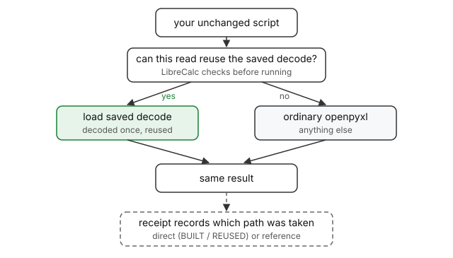
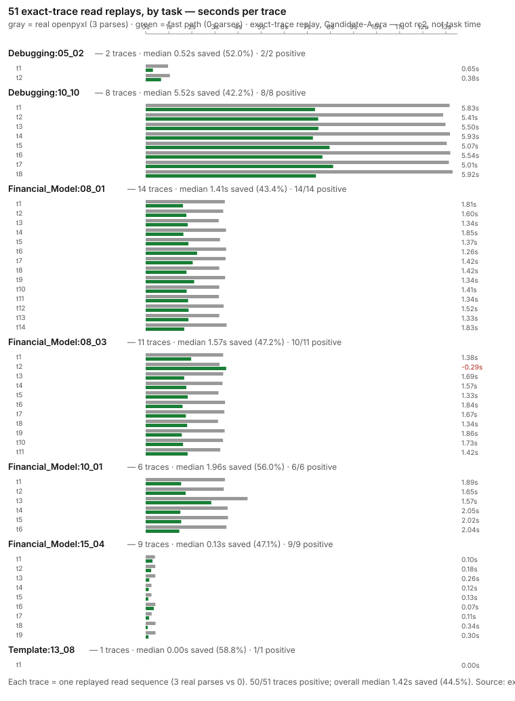
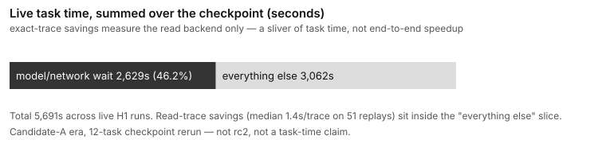

LibreCalc
Faster repeated spreadsheet reads. Same ordinary openpyxl code.
Every time a script opens a workbook, it pays to parse the XLSX and rebuild the workbook in memory — even when nothing changed since the last run. LibreCalc decodes the workbook once, saves that decoded state, and reuses it on later runs, so repeated reads skip the repeated parsing.
When LibreCalc cannot safely serve an operation, your code runs on ordinary openpyxl, untouched. Nothing silently changes meaning.
The demo
Same script, four beats: ordinary Python, first run (BUILT), second run (REUSED), and an unsupported operation on the reference path. Recorded output below — generated by scripts/demo.sh, no hand edits:
Timings are this demo / this machine only — not a benchmark. Read phase = time inside the script (parse + reads).
What work is avoided
Before: every run pays the same price. run 1: parse XLSX ──► build workbook ──► read cells run 2: parse XLSX ──► build workbook ──► read cells run 3: parse XLSX ──► build workbook ──► read cells After: the decode is saved once and reused. run 1: parse XLSX ──► save decoded state ──► read cells (BUILT) run 2: load saved state ──► read cells (REUSED) run 3: load saved state ──► read cells (REUSED)
How it fits together

LibreCalc does not need to understand all of openpyxl. Its value is owning a narrow path well and getting out of the way everywhere else. The run receipt says which path each run took.
What you change
Almost nothing. Keep writing ordinary Python — the only change is how you invoke the script:
python read.py # as before librecalc-agent run --workdir . ./read.py # with LibreCalc underneath
Try it
Linux x86_64, CPython 3.13:
python3 -m venv .venv-product && . .venv-product/bin/activate python -m pip install . scripts/demo.sh # reproducible demo with checks
Limitations
- Repeated reads only: the first run decodes (no cold-start win); writes are never accelerated.
- A narrow, documented read surface; everything else stays on openpyxl.
- Linux-first release candidate; no universal speedup claim; no token, model-cost, or task-score claims.
- Full boundary:
docs/EVIDENCE_AND_LIMITATIONS.mdin the repo.
Research lineage: where the seconds lived (internal)
Leading with the task set, as requested — every contacted task, every trace, including the one regression. Source: candidate_a_a1_checkpoint_rerun_01/exact_trace_performance.jsonl, verified against the frozen report at build time (median 1.42 s saved, 44.5%, 50/51 positive).
The 7 contacted tasks
All 51 traces, per task (seconds)

Gray = real openpyxl (3 parses per trace) · green = fast path (0 parses). The single red value is the one trace that regressed (Financial_Model:08_03).
Why task time barely moves

Live H1 runs totaled 5,691 s; 2,629 s (46%) was model/network wait. The 1.4 s/trace read savings sit inside the "everything else" slice.
All review materials
Everything from this presentation pass in one place. Raw files, shown as-is for review — most of this stays out of the public README:
- README draft — benefits-first structure + hero copy sketch
- Architecture diagram — reuse + fallback (also shown above)
- Visual assets + claim/evidence check — 3-asset plan, evidence table, open questions
- Presentation plan — audit findings, approach, validation
- Demo transcript — the recorded run behind this page
- demo.sh — reproducible driver with checks
- read.py / unsupported.py — the two demo scripts
- generate_model.py — deterministic workbook generator
- Fixture README — what each demo file proves
- lineage_build.py — generator for the lineage charts (verifies data against the frozen report)